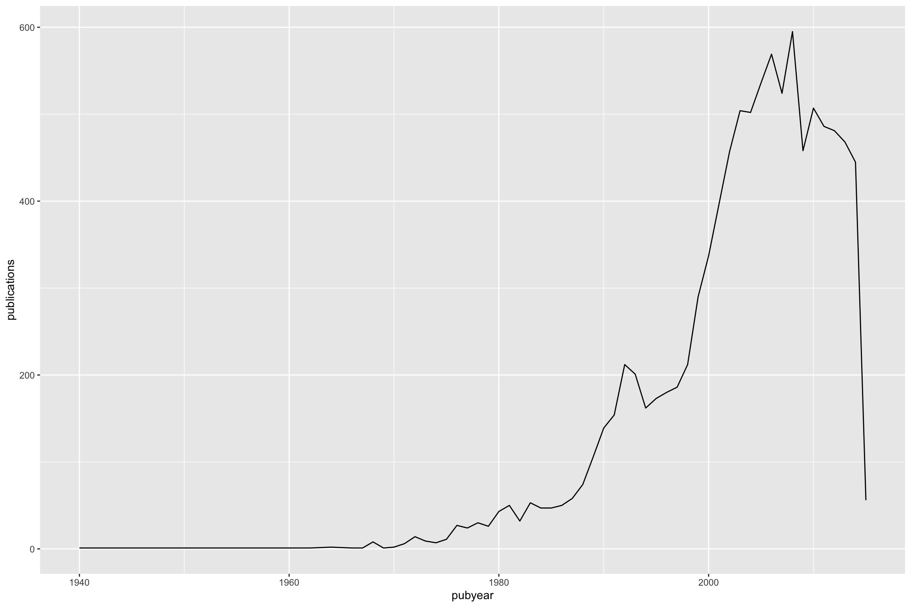
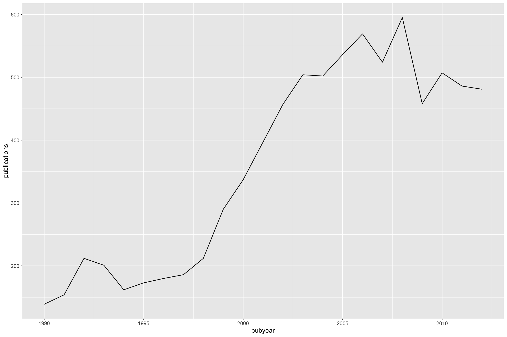
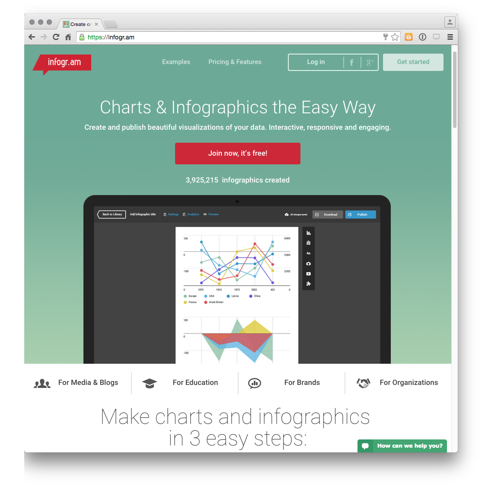
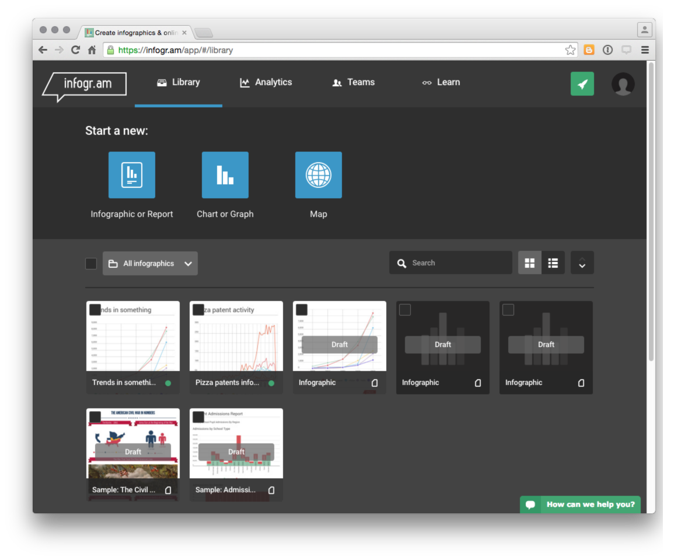
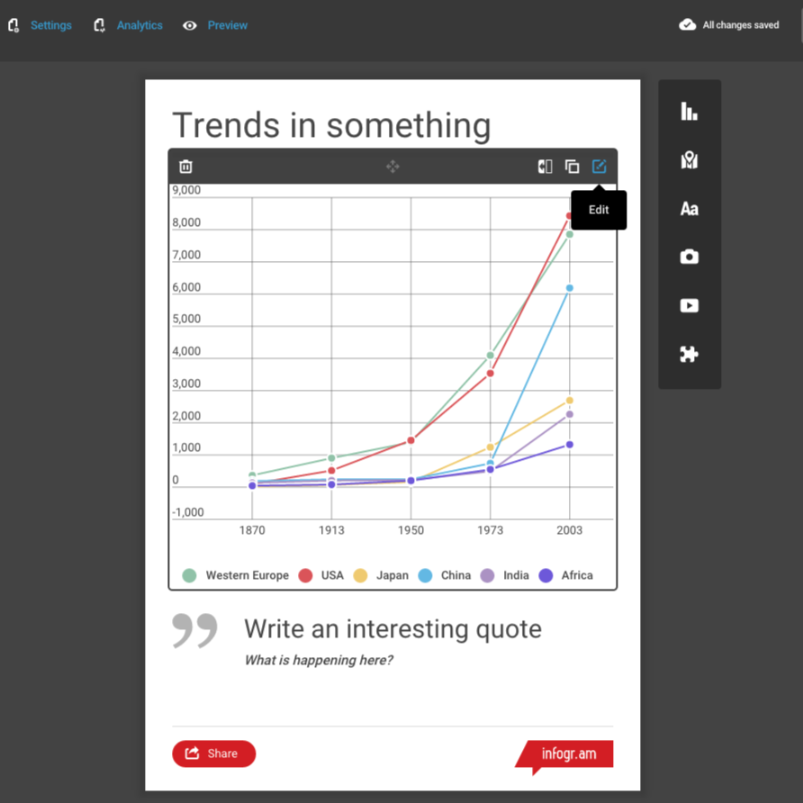
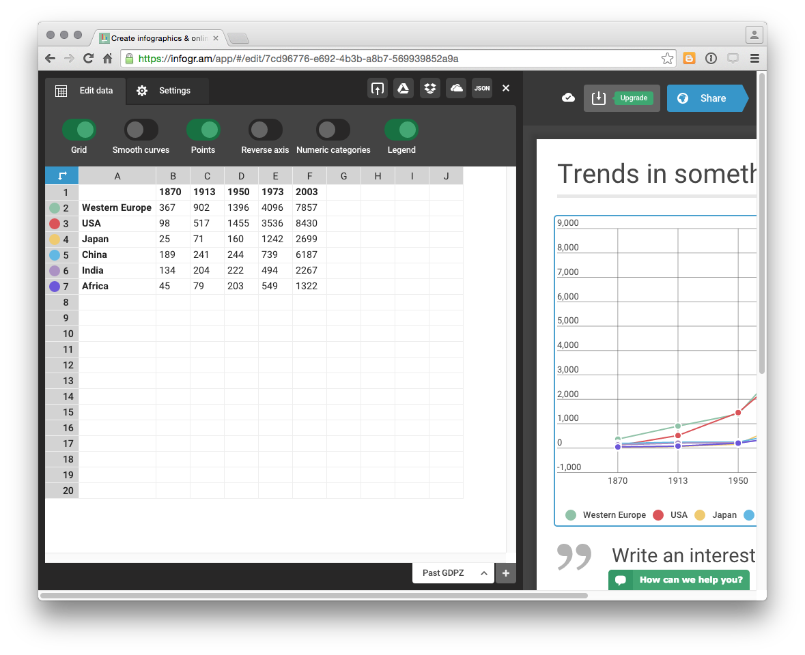
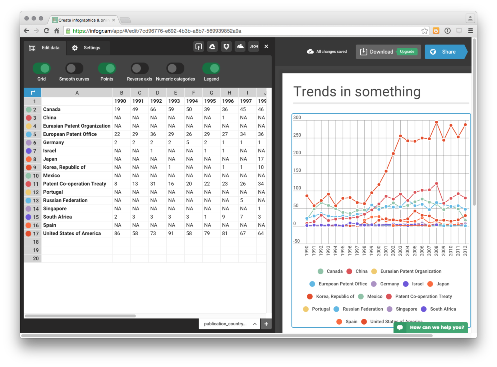
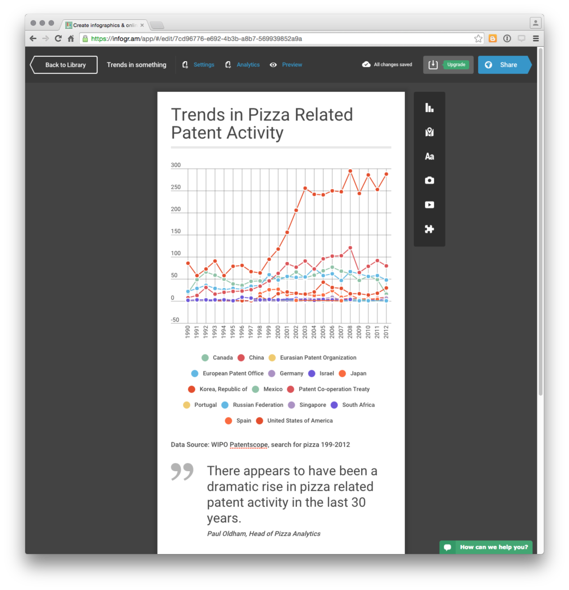

Chapter 14 Patent Infographics with R
In this chapter we will use RStudio to prepare patent data for visualisation in an infographic using online software tools.
Infographics are a popular way of presenting data in a way that is easy for a reader to understand without reading a long report. Infographics are well suited to presenting summaries of data with simple messages about key findings. A good infographic can encourage the audience to read a detailed report and is a tool for engagement with audiences during presentations of the findings of patent research.
Some patent offices have already been creating infographics as part of their reports to policy makers and other clients. The Instituto Nacional de Propiedade Industrial (INPI) in Brazil produces regular two page Technology Radar (Radar Tecnologico) consisting of charts and maps that briefly summarise more detailed research on subjects such as Nanotechnology in Waste Management. WIPO Patent Landscape Reports, which go into depth on patent activity for a particular area, are accompanied by one page infographics that have proved very popular such as the infographic accompanying a recent report on assistive devices.
A growing number of companies are offering online infographic software services such as infogr.am,easel.ly piktochart.com, canva.com or venngage.com to mention only a selection of the offerings out there. The Cool Infographics website provides a useful overview of available tools.
One feature of many of these services is that they are based on a freemium model. Creating graphics is free but the ability to export files and the available formats for export of your masterpiece (e.g. high resolution or .pdf) often depend on upgrading to a monthly account at varying prices. In this chapter we test drive infogr.am as a chart friendly service, albeit with export options that depend on a paid account.
This chapter is divided into two sections.
- In part 1 we focus on using RStudio to prepare patent data for visualisation in infographics software using the
dplyr,tidyrandstringrpackages. This involves dealing with common problems with patent data such as concatenated fields, white space and creating counts of data fields. - In part 2 we produce an infographic from the data using infogr.am.
14.1 Getting Started
To start with we need to ensure that RStudio and R for your operating system are installed by following the instructions on the RStudio website here. Do not forget to follow the link to also install R for your operating system.
When working in RStudio it is good practice to work with projects. This will keep all of the files for a project in the same folder. To create a project go to File, New Project and create a project. Call the project something like infographic. Any file you create and save for the project will now be listed under the Files tab in RStudio.
R works using packages (libraries) and there are around 7,490 of them for a whole range of purposes. We will use just a few of them. To install a package we use the following. Copy and paste the code into the Console and press enter.
install.packages("tidyverse") # the group of packages you will needPackages can also be installed by selecting the Packages tab and typing the name of the package.
To load the packages (libraries) use the following or check the tick box in the Packages pane.
library(readr)
library(dplyr)
library(tidyr)
library(stringr)
library(ggplot2)We are now ready to go.
14.2 Load a .csv file using readr
We will work with the pizza_medium_clean dataset in the online Github Manual repository. If manually downloading a file remember to click on the file name and select Raw to download the actual file.
We can use the easy to use read_csv() function from the readr package to quickly read in our pizza data directly from the Github repository. Note the raw at the beginning of the filename.
library(readr)
pizza <- read_csv("https://github.com/wipo-analytics/opensource-patent-analytics/blob/master/2_datasets/pizza_medium_clean/pizza.csv?raw=true")readr will display a warning for the file arising from its efforts to parse publication dates on import. We will ignore this as we will not be using this field.
As an alternative to importing directly from Github download the file and in RStudio use File > Import Dataset > From .csv. If you experience problems with direct import of a file the File > Import Dataset approach will give you a range of easy to use controls for figuring this out (e.g. where .csv is actually a tab separated file).
14.3 Viewing Data
We can view data in a variety of ways.
- In the console:
pizza## # A tibble: 9,996 × 31
## applicants_cleaned applicants_clean… applicants_orga… applicants_original
## <chr> <chr> <chr> <chr>
## 1 <NA> People <NA> <NA>
## 2 Ventimeglia Jamie Jo… People <NA> Ventimeglia Jamie J…
## 3 Cordova Robert; Mart… People <NA> Cordova Robert;Mart…
## 4 Lazarillo De Tormes … Corporate Lazarillo De To… LAZARILLO DE TORMES…
## 5 <NA> People <NA> <NA>
## 6 Depoortere, Thomas People <NA> DEPOORTERE, Thomas
## 7 Frisco Findus Ag Corporate Frisco Findus Ag FRISCO-FINDUS AG
## 8 Bicycle Tools Incorp… Corporate Bicycle Tools I… Bicycle Tools Incor…
## 9 Castiglioni, Carlo People <NA> CASTIGLIONI, CARLO
## 10 <NA> People <NA> <NA>
## # … with 9,986 more rows, and 27 more variables: inventors_cleaned <chr>,
## # inventors_original <chr>, ipc_class <chr>, ipc_codes <chr>,
## # ipc_names <chr>, ipc_original <chr>, ipc_subclass_codes <chr>,
## # ipc_subclass_detail <chr>, ipc_subclass_names <chr>,
## # priority_country_code <chr>, priority_country_code_names <chr>,
## # priority_data_original <chr>, priority_date <chr>,
## # publication_country_code <chr>, publication_country_name <chr>, …In Environment click on the blue arrow to see in the environment. Keep clicking to open a new window with the data.
Use the
View()command (for data.frames and tables)
View(pizza)If possible use the View() command or environment. The difficulty with the console is that large amounts of data will simply stream past.
14.4 Identifying Types of Object
We often want to know what type of object we are working with and more details about the object so we know what to do later. Here are some of the most common commands for obtaining information about objects.
class(pizza) ## type of object
names(pizza) ## names of variables
str(pizza) ## structure of object
dim(pizza) ## dimensions of the objectThe most useful command in this list is str() because this allows us to access the structure of the object and see its type.
str(pizza, max.level = 1)str() is particularly useful because we can see the names of the fields (vectors) and their type. Most patent data is a character vector with dates forming integers.
14.5 Working with Data
We will often want to select aspects of our data to focus on a specific set of columns or to create a graph. We might also want to add information, notably numeric counts.
The dplyr package provides a set of very handy functions for selecting, adding and counting data. The tidyr and stringr packages are sister packages that contain a range of other useful functions for working with our data. We have covered some of these in other chapters on graphing using R but will go through them quickly and then pull them together into a function that we can use across our dataset.
14.5.1 Select
In this case we will start by using the select() function to limit the data to specific columns. We can do this using their names or their numeric position (best for large number of columns e.g. 1:31). In dplyr, unlike most R packages, existing character columns do not require "".
library(dplyr)
pizza_number <- select(pizza, publication_number, publication_year)We now have a new data.frame that contains two columns. One with the year and one with the publication number. Note that we have created a new object called pizza_number using <- and that after select() we have named our original data and the columns we want. A fundamental feature of select is that it will drop columns that we do not name. So it is best to create a new object using <- if you want to keep your original data for later work.
14.5.2 Adding data with mutate()
mutate() is a dplyr function that allows us to add data based on existing data in our data frame, for example to perform a calculation. In the case of patent data we normally lack a numeric field to use for counts. We can however assign a value to our publication field by using sum() and the number 1 as follows.
library(dplyr)
pizza_number <- mutate(pizza_number, n = sum(publication_number = 1))When we view pizza_number we now have a value of 1 in the column n for each publication number. Note that in patent data a priority, application, publication or family number may occur multiple times and we would want to reduce the dataset to distinct records. For that we would use n_distinct(pizza_number$publication_number) from dplyr or unique(pizza_number$publication_number) from base R. Because the publication numbers are unique we can proceed.
14.5.3 Counting data using count()
At the moment, we have multiple instances of the same year (where a patent publication occurs in that year). We now want to calculate how many of our documents were published in each year. To do that we will use the dplyr function count(). We will use the publication_year and add wt = (for weight) with n as the value to count.
library(dplyr)
pizza_total <- count(pizza_number, publication_year, wt = n)
pizza_total## # A tibble: 58 × 2
## publication_year n
## <dbl> <dbl>
## 1 1940 1
## 2 1954 1
## 3 1956 1
## 4 1957 1
## 5 1959 1
## 6 1962 1
## 7 1964 2
## 8 1966 1
## 9 1967 1
## 10 1968 8
## # … with 48 more rowsWhen we now examine pizza_total, we will see the publication year and a summed value for the records in that year.
This raises the question of how we know that R has calculated the count correctly. We already know that there are 9996 records in the pizza dataset. To check our count is correct we can simply use sum and select the column we want to sum using $.
sum(pizza_total$n)## [1] 9996So, all is good and we can move on. The $ sign is one of the main ways of subsetting to tell R that we want to work with a specific column (the others are “[” and “[[”).
14.5.4 Rename a field with rename()
Next we will use rename() from dplyr to rename the fields. Note that understanding which field require quote marks can take some effort. In this case renaming the character vector publication_year as “pubyear” requires quotes while renaming the numeric vector “n” does not.
library(dplyr)
pizza_total <- rename(pizza_total, pubyear = publication_year, publications = n)
head(pizza_total)## # A tibble: 6 × 2
## pubyear publications
## <dbl> <dbl>
## 1 1940 1
## 2 1954 1
## 3 1956 1
## 4 1957 1
## 5 1959 1
## 6 1962 114.5.5 Make a quickplot with qplot()
Using the qplot() function in ggplot2 we can now draw a quick line graph. Note that qplot() is unusual in R because the data (pizza_total) appears after the coordinates. We will specify that we want a line using geom = (if geom is left out it will be a scatter plot). This will give us an idea of what our plot might look like in our infographic and actions we might want to take on the data.
library(ggplot2)
qplot(x = pubyear, y = publications, data = pizza_total, geom = "line")
The plot reveals a data cliff in recent years. This normally reflects a lack of data for the last 2-3 years as recent documents feed through the system en route to publication.
It is a good idea to remove the data cliff by cutting the data 2-3 years prior to the present. In some cases two years is sufficient, but 3 years is a good rule of thumb.
We also have long tail of data with limited data from 1940 until the late 1970s. Depending on our purposes with the analysis we might want to keep this data (for historical analysis) or to focus in on a more recent period.
We will limit our data to specific values using the dplyr function filter().
14.5.6 Filter data using filter()
In contrast with select() which works with columns, filter() in dplyr works with rows. In this case we need to filter on the values in the pubyear column. To remove the data prior to 1990 we will use the greater than or equal to operator >= on the pubyear column and we will use the less than or equal to <= operator on the values after 2012.
One strength of filter() in dplyr is that it is easy to filter on multiple values in the same expression (unlike the very similar filter function in base R). The use of filter() will also remove the 30 records where the year is recorded as NA (Not Available). We will write this file to disk using the simple write_csv() from readr. To use write_csv() we first name our data (pizza_total) and then provide a file name with a .csv extension. In this case and other examples below we have used a descriptive file name bearing in mind that Windows systems have limitations on the length and type of characters that can be used in file names.
library(dplyr)
library(readr)
pizza_total <- filter(pizza_total, pubyear >= 1990, pubyear <= 2012)
head(pizza_total)## # A tibble: 6 × 2
## pubyear publications
## <dbl> <dbl>
## 1 1990 139
## 2 1991 154
## 3 1992 212
## 4 1993 201
## 5 1994 162
## 6 1995 173When we print pizza_total to the console we will see that the data now covers the period 1990-2012. When using filter() on values in this way it is important to remember to apply this filter to any subsequent operations on the data (such as applicants) so that it matches the same data period.
To see our .csv file we can head over to the Files tab and, assuming that we have created a project, the file will now appear in the list of project files. Clicking on the file name will display the raw unformatted data in RStudio.
14.6 Simplify code with pipes %>%
So far we have handled the code one line at a time. But, one of the great strengths of using a programming language is that we can run multiple lines of code together. There are two basic ways that we can do this.
We will create a new temporary object df to demonstrate this.
- The standard way
library(dplyr)
library(ggplot2)
df <- select(pizza, publication_number, publication_year)
df <- mutate(df, n = sum(publication_number = 1))
df <- count(df, publication_year, wt = n)
df <- rename(df, "pubyear" = publication_year, publications = n)
df <- filter(df, pubyear >= 1990, pubyear <= 2012)
qplot(x = pubyear, y = publications, data = df, geom = "line")The code we have just created is six lines long. If we select all of this code and run it in one go it will produce our graph.
One feature of this code is that each time we run a function on the object total we name it at the start of each function (e.g. mutate(df…)) and then we overwrite the object.
We can save quite a lot of typing and reduce the complexity of the code using the pipe operator introduced by the the magrittr package and then adopted in Hadley Wickham’s data wrangling and tidying packages.
- Using pipes
%>%
Pipes are now a very popular way of writing R code because they simplify writing R code and speed it up. The most popular pipe is %>% which means “this” then “that”. In this case we are going to create a new temporary object df1 by first applying select to pizza, then mutate, count, rename and filter. Note that we only name our dataset once (in select()) and we do not need to keep overwriting the object.
library(dplyr)
library(ggplot2)
df1 <-
select(pizza, publication_number, publication_year) %>%
mutate(n = sum(publication_number = 1)) %>%
count(publication_year, wt = n) %>%
rename("pubyear" = publication_year, publications = n) %>%
filter(pubyear >= 1990, pubyear <= 2012) %>%
qplot(x = pubyear, y = publications, data = ., geom = "line")
df1
In the standard code we typed df nine times to arrive at the same result. Using pipes we typed df1 once. Of greater importance is that the use of pipes simplifies the structure of R code by introducing a basic “this” then “that” logic which makes it easier to understand.
One point to note about this code is that qplot() requires us to name our data (in this case df1). However, df1 is actually the final output of the code and does not exist as an input object before the final line is run. So, if we attempt to use data = df1 in qplot() we will receive an error message. The way around this is to use . in place of our data object. That way qplot() will know we want to graph the outputs of the earlier code. Finally, we need to add an explicit call to print() to display the graph (without this the code will work but we will not see the graph).
If we now inspect the structure of the df1 object (using str(df1)) in the console, it will be a list. The reason for this is that it is an object with mixed components, including a data.frame with our data plus additional data setting out the contents of the plot. As there is no direct link between R and our infographics software this will create problems for us later because the infographics software won’t know how to interpret the list object. So, it is generally a good idea to use a straight data.frame by excluding the call to qplot and adding it later when needed as follows.
library(dplyr)
library(ggplot2)
df2 <-
select(pizza, publication_number, publication_year) %>%
mutate(n = sum(publication_number = 1)) %>%
count(publication_year, wt = n) %>%
rename("pubyear" = publication_year, publications = n) %>%
filter(pubyear >= 1990, pubyear <= 2012)
df2## # A tibble: 23 × 2
## pubyear publications
## <dbl> <dbl>
## 1 1990 139
## 2 1991 154
## 3 1992 212
## 4 1993 201
## 5 1994 162
## 6 1995 173
## 7 1996 180
## 8 1997 186
## 9 1998 212
## 10 1999 290
## # … with 13 more rowsNote that in this case the only change is that we need to explicitly include the reference to the df2 data frame as the data argument in the call to qplot().
library(ggplot2)
qplot(x = pubyear, y = publications, data = df2, geom = "line")
14.7 Harmonising data
One challenge with creating multiple tables from a baseline dataset is keeping track of subdatasets. At the moment we have two basic objects we will be working with:
pizza- our raw datasetpizza_total- created viapizza_numberlimited to 1990_2012.
In the remainder of the chapter we will want to create some additional datasets from our pizza dataset. These are:
- Country trends
- Applicants
- International Patent Classification (IPC) Class
- Phrases
- Google IPC
- Google phrases
We need to make sure that any data that we generate from our raw dataset matches the period for the pizza_total dataset. If we do not do this there is a risk that we will generate subdatasets with counts for the raw pizza dataset.
To handle this we will use filter() to create a new baseline dataset with an unambiguous name.
library(dplyr)
pizza_1990_2012 <- rename(pizza, "pubyear" = publication_year) %>%
filter(pubyear >= 1990, pubyear <= 2012)
head(pizza_1990_2012)## # A tibble: 6 × 31
## applicants_cleaned applicants_clean… applicants_orga… applicants_orig…
## <chr> <chr> <chr> <chr>
## 1 <NA> People <NA> <NA>
## 2 Lazarillo De Tormes S L Corporate Lazarillo De To… LAZARILLO DE TO…
## 3 <NA> People <NA> <NA>
## 4 Depoortere, Thomas People <NA> DEPOORTERE, Tho…
## 5 Frisco Findus Ag Corporate Frisco Findus Ag FRISCO-FINDUS AG
## 6 Bicycle Tools Incorporated Corporate Bicycle Tools I… Bicycle Tools I…
## # … with 27 more variables: inventors_cleaned <chr>, inventors_original <chr>,
## # ipc_class <chr>, ipc_codes <chr>, ipc_names <chr>, ipc_original <chr>,
## # ipc_subclass_codes <chr>, ipc_subclass_detail <chr>,
## # ipc_subclass_names <chr>, priority_country_code <chr>,
## # priority_country_code_names <chr>, priority_data_original <chr>,
## # priority_date <chr>, publication_country_code <chr>,
## # publication_country_name <chr>, publication_date <chr>, …In this case we start with a call to rename() to make this consistent with our pizza_total table and then use a pipe to filter the data on the year. Note here that when filtering raw data on a set of values it is important to inspect it first to check that the field is clean (e.g. not concatenated). If for some reason your data is concatenated (which happens quite a lot with patent data) then lookup ?tidyr::separate_rows.
We are now in a position to create our country trends table.
14.8 Country Trends using spread() and pivot_wider()
There are two basic data formats: long and wide. Our pizza dataset is in long format because each column is a variable (e.g. publication_country) and each row in publication_country contains a country name. This is the most common and useful data format.
However, in some cases, such as infogr.am our visualisation software will expect the data to be in wide format. In this case each country name would become a variable (column name) with the years forming the rows and the number of records per year the observations. The key to this is the tidyr() function spread() and the more recent replacement pivot_wider().
As above we will start off by using select() to create a table with the fields that we want. We will then use mutate() to add a numeric field and then count up that data. To illustrate the process run this code (we will not create an object).
library(dplyr)
select(pizza_1990_2012, publication_country_name, publication_number, pubyear) %>%
mutate(n = sum(publication_number = 1)) %>%
count(publication_country_name, pubyear, wt = n) %>%
print()## # A tibble: 223 × 3
## publication_country_name pubyear n
## <chr> <dbl> <dbl>
## 1 Canada 1990 19
## 2 Canada 1991 49
## 3 Canada 1992 66
## 4 Canada 1993 59
## 5 Canada 1994 50
## 6 Canada 1995 39
## 7 Canada 1996 36
## 8 Canada 1997 45
## 9 Canada 1998 46
## 10 Canada 1999 47
## # … with 213 more rowsWhen we run this code we will see the results in long format. We now want to take our publication_country_name column and spread it to form columns with n as the values.
In using spread note that it takes a data argument (pizza_1990_2012), a key (publication_country_name), and value column (n) (created from count()). We are using pipes so the data only needs to be named in the first line. For additional arguments see ?spread().
library(dplyr)
library(tidyr)
country_totals <- select(pizza_1990_2012, publication_country_name, publication_number, pubyear) %>%
mutate(n = sum(publication_number = 1)) %>%
count(publication_country_name, pubyear, wt = n) %>%
spread(publication_country_name, n)
country_totals## # A tibble: 23 × 17
## pubyear Canada China `Eurasian Patent … `European Paten… Germany Israel Japan
## <dbl> <dbl> <dbl> <dbl> <dbl> <dbl> <dbl> <dbl>
## 1 1990 19 NA NA 22 2 NA NA
## 2 1991 49 NA NA 29 2 NA NA
## 3 1992 66 NA NA 36 2 1 NA
## 4 1993 59 NA NA 29 2 NA NA
## 5 1994 50 NA NA 26 5 NA NA
## 6 1995 39 NA NA 29 2 1 NA
## 7 1996 36 1 NA 27 1 1 NA
## 8 1997 45 NA NA 34 1 NA NA
## 9 1998 46 NA NA 36 1 NA 17
## 10 1999 47 2 2 60 4 NA 26
## # … with 13 more rows, and 9 more variables: Korea, Republic of <dbl>,
## # Mexico <dbl>, Patent Co-operation Treaty <dbl>, Portugal <dbl>,
## # Russian Federation <dbl>, Singapore <dbl>, South Africa <dbl>, Spain <dbl>,
## # United States of America <dbl>One problem with spread is that it can be difficult to remember the order of the arguments. In response to this the more recent and preferred approach is to use pivot_wider() which replaces spread (see also pivot_longer(). pivot_wider() takes two main arguments names_from = and values_from. This is a lot easier to remember with some practice. It is also more likely to be familiar if you have a background in Excel where pivot table.
We can achieve the same thing in a more transparent way with pivot_wider() as we see below.
library(dplyr)
library(tidyr)
country_totals <- select(pizza_1990_2012, publication_country_name, publication_number, pubyear) %>%
mutate(n = sum(publication_number = 1)) %>%
count(publication_country_name, pubyear, wt = n) %>%
pivot_wider(names_from = publication_country_name, values_from = n)
head(country_totals)## # A tibble: 6 × 17
## pubyear Canada China `Eurasian Patent … `European Patent… Germany Israel Japan
## <dbl> <dbl> <dbl> <dbl> <dbl> <dbl> <dbl> <dbl>
## 1 1990 19 NA NA 22 2 NA NA
## 2 1991 49 NA NA 29 2 NA NA
## 3 1992 66 NA NA 36 2 1 NA
## 4 1993 59 NA NA 29 2 NA NA
## 5 1994 50 NA NA 26 5 NA NA
## 6 1995 39 NA NA 29 2 1 NA
## # … with 9 more variables: Korea, Republic of <dbl>, Mexico <dbl>,
## # Patent Co-operation Treaty <dbl>, Portugal <dbl>, Russian Federation <dbl>,
## # Singapore <dbl>, South Africa <dbl>, Spain <dbl>,
## # United States of America <dbl>We now have data in wide format.
In some cases, such as infogr.am, visualisation software may expect the country names to be the name of rows and the column names to be years . We can modify our call to pivot_wider() by replacing the publication_country_name with pubyear. Then we will write the data to disk for use in our infographic.
library(dplyr)
library(readr)
country_totals <- select(pizza_1990_2012, publication_country_name, publication_number, pubyear) %>%
mutate(n = sum(publication_number = 1)) %>%
count(publication_country_name, pubyear, wt = n) %>%
pivot_wider(names_from = pubyear, values_from = n)
country_totals## # A tibble: 16 × 24
## publication_country_… `1990` `1991` `1992` `1993` `1994` `1995` `1996` `1997`
## <chr> <dbl> <dbl> <dbl> <dbl> <dbl> <dbl> <dbl> <dbl>
## 1 Canada 19 49 66 59 50 39 36 45
## 2 China NA NA NA NA NA NA 1 NA
## 3 Eurasian Patent Orga… NA NA NA NA NA NA NA NA
## 4 European Patent Offi… 22 29 36 29 26 29 27 34
## 5 Germany 2 2 2 2 5 2 1 1
## 6 Israel NA NA 1 NA NA 1 1 NA
## 7 Japan NA NA NA NA NA NA NA NA
## 8 Korea, Republic of NA NA NA 1 NA NA 1 1
## 9 Mexico NA NA NA NA NA NA NA NA
## 10 Patent Co-operation … 8 13 31 16 20 22 23 26
## 11 Portugal NA NA NA NA NA NA NA NA
## 12 Russian Federation NA NA NA NA NA NA NA 5
## 13 Singapore NA NA NA NA NA NA NA NA
## 14 South Africa 2 3 3 3 3 1 9 7
## 15 Spain NA NA NA NA NA NA NA NA
## 16 United States of Ame… 86 58 73 91 58 79 81 67
## # … with 15 more variables: 1998 <dbl>, 1999 <dbl>, 2000 <dbl>, 2001 <dbl>,
## # 2002 <dbl>, 2003 <dbl>, 2004 <dbl>, 2005 <dbl>, 2006 <dbl>, 2007 <dbl>,
## # 2008 <dbl>, 2009 <dbl>, 2010 <dbl>, 2011 <dbl>, 2012 <dbl>write_csv(country_totals, "pizza_country_1990_2012.csv")To restore the data to long format we would need to use pivot_longer() as the counterpart to pivot_wider() (formerly gather() was used as the counterpart to spread()). gather() takes a dataset, a key for the name of the column we want to gather the countries into, a value for the numeric count (in this case n), and finally the positions of the columns to gather in. Note here that we need to look up the column positions in country_totals (e.g. using View()) or count the columns using ncol(country_totals).
library(dplyr)
#country_totals %>%
# pivot_longer(everything(),
# names_to = c("pubyear", "n"),
# )
#gather(country_totals, year, n, 2:24) %>%
# print()The combination of spread and gather work really well to prepare data in formats that are expected by other software. However, one of the main issues we encounter with patent data is that our data is not tidy because various fields are concatenated.
14.9 Tidying data - Separating and Gathering
In patent data we often see concatenated fields with a separator (normally a ;). These are typically applicant names, inventor names, International Patent Classification (IPC) codes, or document numbers (priority numbers, family numbers). We need to tidy this data prior to data cleaning (such as cleaning names) or to prepare for analysis and visualisation. For more on the concept of tidy data read Hadley Wickham’s Tidy Data article. The new R for Data Science book by Garrett Grolemund and Hadley Wickham (see Chapter 12) is also strongly recommended.
To tidy patent data we will typically need to do two things.
Separate the data so that each cell contains a unique data point (e.g. a name, code or publication number). This normally involves separating data into columns.
Gathering the data back in. This involves transforming the data in the columns we have created into rows.
Separating data into columns is very easy in tools such as Excel. However, gathering the data back into separate rows is remarkably difficult. Happily, this is very easy to do in R with the tidyr package.
The tidyr package contains three functions that are very useful when working with patent data. When dealing with concatenated fields in columns the key function is separate_rows.
Here we will work with the applicants_cleaned field in the pizza dataset. This field contains concatenated names with a ; as the separator. For example, on lines 1_9 there are single applicant names or NA values. However, on lines 10 and line 59 we see:
Ehrno Flexible A/S; Stergaard, Ole
Farrell Brian; Mcnulty John; Vishoot LisaThe problem here is that when we are dealing with thousands of lines of applicant names we don’t know how many names might be concatenated into each cell as a basis for separating the data into columns. Once we had split the columns (for example using Text to Columns in Excel) we would then need to work out how to gather the columns into rows. The separate_rows() function from tidyr makes light work of this problem. To use the function we name the dataset, the column we want to separate into rows and the separator (sep).
library(dplyr)
library(tidyr)
pizza1 <- pizza_1990_2012 %>%
separate_rows(applicants_cleaned, sep = ";")
pizza1## # A tibble: 12,597 × 31
## applicants_cleaned applicants_clea… applicants_orga… applicants_orig…
## <chr> <chr> <chr> <chr>
## 1 <NA> People <NA> <NA>
## 2 Lazarillo De Tormes S L Corporate Lazarillo De To… "LAZARILLO DE T…
## 3 <NA> People <NA> <NA>
## 4 Depoortere, Thomas People <NA> "DEPOORTERE, Th…
## 5 Frisco Findus Ag Corporate Frisco Findus Ag "FRISCO-FINDUS …
## 6 Bicycle Tools Incorporated Corporate Bicycle Tools I… "Bicycle Tools …
## 7 Castiglioni, Carlo People <NA> "CASTIGLIONI, C…
## 8 <NA> People <NA> <NA>
## 9 Bujalski, Wlodzimierz People <NA> "BUJALSKI, WLOD…
## 10 Ehrno Flexible A/S Corporate; Peop… Ehrno Flexible … "EHRNO FLEXIBLE…
## # … with 12,587 more rows, and 27 more variables: inventors_cleaned <chr>,
## # inventors_original <chr>, ipc_class <chr>, ipc_codes <chr>,
## # ipc_names <chr>, ipc_original <chr>, ipc_subclass_codes <chr>,
## # ipc_subclass_detail <chr>, ipc_subclass_names <chr>,
## # priority_country_code <chr>, priority_country_code_names <chr>,
## # priority_data_original <chr>, priority_date <chr>,
## # publication_country_code <chr>, publication_country_name <chr>, …Our original dataset contained 8,262 rows. Our new dataset split on applicant names contains 12,729 rows. The function has moved our target column from column 1 to column 31 in the data frame. We can easily move it back to inspect.
library(dplyr)
pizza1 <- pizza1 %>% select(., 31, 1:30)separate_rows() has done a great job but one of the problems with concatenated names is extra white space around the separator. We will deal with this next.
14.9.1 Trimming with stringr
If we inspect the bottom of the column by subsetting into it using $ we will see that a lot of the names have a leading whitespace space. This results from the separate exercise where the ; is actually ;space. Take a look at the last few rows of the data using tail().
tail(pizza1$applicants_cleaned, 20)## [1] "Yahoo! Inc" "Clarcor Inc"
## [3] "Holden Jeffrey A" " Vengroff Darren E"
## [5] "Casper Jeffrey L" " Erickson Braden J"
## [7] " Oppenheimer Alan A" " Ray Madonna M"
## [9] " Weber Jean L" "Pandey Neena"
## [11] " Sharma Sudhanshu" " Verizon Patent And Licensing Inc"
## [13] "Pandey Neena" " Sharma Sudhanshu"
## [15] "Brown Michael" " Urban Scott"
## [17] "Brown Michael" " Urban Scott"
## [19] "Cole Lorin R" " Middleton Scott W"This is a big issue because any counts that we make later on using the applicants_cleaned field will treat “Oppenheimer Alan A” and ” Oppenheimer Alan A” as separate names when they should be grouped together.
We can address this in a couple of ways. One approach is to recognise that actually our separator is not a simple ";" but ";space" in our call to separate_rows(). In that case the call to separate_rows() would actually be sep = "; ". We will add a line of code to illustrate the impact of this change.
tmp <- pizza_1990_2012 %>%
separate_rows(., applicants_cleaned, sep = "; ")
# inspect the problem entry
tail(tmp$applicants_cleaned, 20)## [1] "Yahoo! Inc" "Clarcor Inc"
## [3] "Holden Jeffrey A" "Vengroff Darren E"
## [5] "Casper Jeffrey L" "Erickson Braden J"
## [7] "Oppenheimer Alan A" "Ray Madonna M"
## [9] "Weber Jean L" "Pandey Neena"
## [11] "Sharma Sudhanshu" "Verizon Patent And Licensing Inc"
## [13] "Pandey Neena" "Sharma Sudhanshu"
## [15] "Brown Michael" "Urban Scott"
## [17] "Brown Michael" "Urban Scott"
## [19] "Cole Lorin R" "Middleton Scott W"Another way to address this, is to use the str_trim() function from the stringr package.
We can address this problem using a function from the stringr package str_trim(). We have a choice with str_trim() on whether to trim the whitespace on the right, left or both. Here we will choose both.
Because we are seeking to modify an existing column (not to create a new vector or data.frame) we will use $ to select the column and as the data for the str_trim() function. That will apply the function to the applicants column in pizza1.
library(stringr)
pizza1$applicants_cleaned <- str_trim(pizza1$applicants_cleaned, side = "both")
tail(pizza1$applicants_cleaned, 20)## [1] "Yahoo! Inc" "Clarcor Inc"
## [3] "Holden Jeffrey A" "Vengroff Darren E"
## [5] "Casper Jeffrey L" "Erickson Braden J"
## [7] "Oppenheimer Alan A" "Ray Madonna M"
## [9] "Weber Jean L" "Pandey Neena"
## [11] "Sharma Sudhanshu" "Verizon Patent And Licensing Inc"
## [13] "Pandey Neena" "Sharma Sudhanshu"
## [15] "Brown Michael" "Urban Scott"
## [17] "Brown Michael" "Urban Scott"
## [19] "Cole Lorin R" "Middleton Scott W"Note that when using str_trim() we use subsetting to modify the applicants column in place. There is possibly a more efficient way of doing this with pipes but this appears difficult because the data.frame needs to exist for str_trim() to act on in place or we end up with a vector of applicant names rather than a data.frame. A solution to this problem is provided on Stack Overflow1.
In practice, the most efficient solution in this case is to recognise that the separator for separate_rows is ";space". However, that will not always be true making the tools in stringr invaluable. To learn more about string manipulation in R try Chapter 14 of R for Data Science by Garrett Grolemund and Hadley Wickham.
We can tie the steps so far together using pipes into the following simpler code that we will become the applicants table for use in the infographic. We will add a call to rename and rename applicants_cleaned to tidy up.
library(dplyr)
library(tidyr)
library(stringr)
applicants <- pizza %>%
rename(., "pubyear" = publication_year) %>%
filter(pubyear >= 1990, pubyear <= 2012) %>%
separate_rows(applicants_cleaned, sep = "; ") %>%
rename(applicants = applicants_cleaned) %>%
select(31, 1:30) # moves separated column to the beginning (could use everything?)
applicants## # A tibble: 12,597 × 31
## title_original applicants applicants_clea… applicants_orga… applicants_orig…
## <chr> <chr> <chr> <chr> <chr>
## 1 PIZZA <NA> People <NA> <NA>
## 2 IMPROVED PIZZA Lazarillo… Corporate Lazarillo De To… "LAZARILLO DE T…
## 3 Pizza separator <NA> People <NA> <NA>
## 4 Pizza separator Depoorter… People <NA> "DEPOORTERE, Th…
## 5 PIZZA PREPARAT… Frisco Fi… Corporate Frisco Findus Ag "FRISCO-FINDUS …
## 6 Pizza Cutter Bicycle T… Corporate Bicycle Tools I… "Bicycle Tools …
## 7 PIZZA BOX Castiglio… People <NA> "CASTIGLIONI, C…
## 8 PIZZA BOX <NA> People <NA> <NA>
## 9 MORE ATTRACTIV… Bujalski,… People <NA> "BUJALSKI, WLOD…
## 10 PIZZA PACKAGING Ehrno Fle… Corporate; Peop… Ehrno Flexible … "EHRNO FLEXIBLE…
## # … with 12,587 more rows, and 26 more variables: inventors_cleaned <chr>,
## # inventors_original <chr>, ipc_class <chr>, ipc_codes <chr>,
## # ipc_names <chr>, ipc_original <chr>, ipc_subclass_codes <chr>,
## # ipc_subclass_detail <chr>, ipc_subclass_names <chr>,
## # priority_country_code <chr>, priority_country_code_names <chr>,
## # priority_data_original <chr>, priority_date <chr>,
## # publication_country_code <chr>, publication_country_name <chr>, …We will want to create a plot with the applicants data in our infographic software. For that we need to introduce a field to count on. We might also want to establish a cut off point based on the number of records per applicant.
In this code we will simply print the applicants ranked in descending order. The second to last line of the code provides a filter on the number of records. This value can be changed after inspecting the data. The final line omits NA values (otherwise the top result) where an applicant name is not available.
library(tidyr)
library(dplyr)
applicant_count <- applicants %>%
select(., applicants, publication_number) %>%
mutate(n = sum(publication_number = 1)) %>%
count(applicants, wt = n) %>%
arrange(desc(n)) %>%
filter(n >= 1) %>%
na.omit()
applicant_count ## # A tibble: 6,110 × 2
## applicants n
## <chr> <dbl>
## 1 Graphic Packaging International, Inc 154
## 2 Kraft Foods Holdings, Inc 132
## 3 Google Inc 123
## 4 Microsoft Corporation 88
## 5 The Pillsbury Company 83
## 6 General Mills, Inc 77
## 7 Nestec 76
## 8 The Procter & Gamble Company 59
## 9 Pizza Hut, Inc 57
## 10 Yahoo! Inc 54
## # … with 6,100 more rowsIf we inspect applicant count using View(applicant_count) we have 6,178 rows. That is far too many to display in an infographic. So, next we will filter the data on the value for the top ten (54). Then we will write the data to a .csv file using the simple write_csv() from readr.
library(dplyr)
library(tidyr)
library(readr)
applicant_count <- applicants %>%
select(., applicants, publication_number) %>%
mutate(n = sum(publication_number = 1)) %>%
count(applicants, wt = n) %>%
arrange(desc(n)) %>%
filter(n >= 54) %>%
na.omit()
applicant_count ## # A tibble: 10 × 2
## applicants n
## <chr> <dbl>
## 1 Graphic Packaging International, Inc 154
## 2 Kraft Foods Holdings, Inc 132
## 3 Google Inc 123
## 4 Microsoft Corporation 88
## 5 The Pillsbury Company 83
## 6 General Mills, Inc 77
## 7 Nestec 76
## 8 The Procter & Gamble Company 59
## 9 Pizza Hut, Inc 57
## 10 Yahoo! Inc 54write_csv(applicant_count, "pizza_applicants_1990_2012.csv")When we inspect applicant_count we will see that Graphic Packaging International is the top result with 154 results with Google ranking third with 123 results followed by Microsoft. This could suggest that Google and Microsoft are suddenly entering the market for online pizza sales or pizza making software or, as is more likely, that there are uses other uses of the word pizza in patent data that we are not aware of.
As part of our infographic we will want to explore this intriguing result in more detail. We can do this by creating a subdataset for Google using filter().
14.10 Selecting applicants using filter()
As we saw above, while select() functions with columns, filter() from dplyr works with rows. Here we will filter the data to select the rows in the applicants column that contain Google Inc. and then write that to a .csv for use in our infographic. Note the use of double == and the quotes around “Google Inc”.
library(dplyr)
library(readr)
google <- applicants %>%
filter(., applicants == "Google Inc")
google## # A tibble: 123 × 31
## title_original applicants applicants_clea… applicants_orga… applicants_orig…
## <chr> <chr> <chr> <chr> <chr>
## 1 Location based… Google Inc Corporate; Peop… Google Inc Hafsteinsson Gu…
## 2 AUTHORITATIVE … Google Inc Corporate Google Inc GOOGLE INC.
## 3 Location-Based… Google Inc Corporate; Peop… Google Inc GOOGLE INC.;HAF…
## 4 Controlling th… Google Inc Corporate; Peop… Google Inc GOOGLE, INC.;BE…
## 5 METHOD AND SYS… Google Inc Corporate Google Inc GOOGLE INC.
## 6 Routing querie… Google Inc Corporate Google Inc GOOGLE INC.
## 7 METHODS AND SY… Google Inc Corporate Google Inc GOOGLE INC.
## 8 Aspect-based s… Google Inc Corporate; Peop… Google Inc Reis George;Goo…
## 9 Interpreting l… Google Inc Corporate Google Inc GOOGLE INC.
## 10 Interpreting l… Google Inc Corporate Google Inc GOOGLE INC.
## # … with 113 more rows, and 26 more variables: inventors_cleaned <chr>,
## # inventors_original <chr>, ipc_class <chr>, ipc_codes <chr>,
## # ipc_names <chr>, ipc_original <chr>, ipc_subclass_codes <chr>,
## # ipc_subclass_detail <chr>, ipc_subclass_names <chr>,
## # priority_country_code <chr>, priority_country_code_names <chr>,
## # priority_data_original <chr>, priority_date <chr>,
## # publication_country_code <chr>, publication_country_name <chr>, …write_csv(google, "google_1990_2012.csv")Note that the correct result for the period 1990 to 2012 for Google is 123 records from 191 records across the whole pizza dataset. The correct result will be achieved only where you use the filtered, separated and trimmed data we created in the applicants data frame.
14.11 Generating IPC Tables
In the next step we will want to generate two tables containing International Patent Classification (IPC) data. IPC codes and the Cooperative Patent Classification (CPC, not present in this dataset) provide information on the technologies involved in a patent document. The IPC is hierarchical and proceeds from the general class level to the detailed group and subgroup level. Experience reveals that the majority of patent documents receive more than one IPC code to more fully describe the technological aspects of patent documents.
The pizza dataset contains IPC codes on the class and the subclass level in concatenated fields. One important consideration in using IPC data is that the descriptions are long and can be difficult for non-specialists to grasp. This can make visualising the data difficult and often requires manual efforts to edit labels for display.
We now want to generate three IPC tables.
- A general IPC table for the pizza dataset
- A general IPC table for the Google dataset
- A more detailed IPC subclass table for the Google dataset
For ease of presentation in an infographic we will use the ipc_class field. For many patent analytics purposes this will be too general. However it has the advantage of being easy to visualise.
To generate the table we can use a generic function based on the code developed for dealing with the applicants data. We will call the function patent_count().
patent_count <- function (data = NULL, col = NULL, count_col = NULL, n_results = n_results, sep = "[^[:alnum:]]+")
{
p_count <- data %>%
dplyr::select(., .data[[col]], .data[[count_col]]) %>%
tidyr::separate_rows(.data[[col]], sep = "[;]") %>% # was sep
dplyr::mutate(!!col := stringr::str_trim(.data[[col]], side = "both")) %>%
dplyr::mutate(n = 1) %>%
group_by(.data[[col]]) %>%
count(., sort = TRUE) %>%
ungroup()
}The patent_count() function is based on the the code we developed for applicants. It contains variations to make it work as a function. The function takes four arguments:
- col = the concatenated column that we want to split and gather back in
- col_count = a column for generating counts (in this dataset the publication_number)
- n_results = the number of results we want to see in the new table (typically 10 or 20 for visualisation). This is equivalent to the number of rows that you want to see.
- sep = the separator to use to separate the data in col. With patent data this is almost always “;” (as
;space.
To generate the ipc_class data we can do the following and then write the file to .csv. Note that we have set the number of results n_results to 10.
pizza_ipc_class <- patent_count(data = pizza_1990_2012, col = "ipc_class", count_col = "publication_number", n_results = 10, sep = ";")
pizza_ipc_class## # A tibble: 111 × 2
## ipc_class n
## <chr> <int>
## 1 A21: Baking 2233
## 2 A23: Foods Or Foodstuffs 1843
## 3 B65: Conveying 1383
## 4 G06: Computing 1326
## 5 A47: Furniture 932
## 6 H04: Electric Communication Technique 747
## 7 H05: Electric Techniques Not Otherwise Provided For 613
## 8 F24: Heating 512
## 9 A61: Medical Or Veterinary Science 318
## 10 G07: Checking 226
## # … with 101 more rows#write_csv(pizza_ipc_class, "pizza_ipcclass_1990_2012.csv")Note that this dataset is based on the main pizza_1990_2012 dataset (including cases where no applicant name is available). The reason we have not used the applicants dataset is because that dataset will duplicate the IPC field for each split of an applicant name. As a result it will over count the IPCs by the number of applicants on a document name. As this suggests, it is important to be careful when working with data that has been tidied because of the impact on other counts.
This problem does not apply in the case of our Google data because the only applicant listed in that data is Google (excluding co-applicants). We can therefore safely use the Google dataset to identify the IPC codes.
google_ipc_class <- patent_count(data = google, col = "ipc_class", count_col = "publication_number", n_results = 10, sep = ";")
google_ipc_class## # A tibble: 7 × 2
## ipc_class n
## <chr> <int>
## 1 G06: Computing 105
## 2 H04: Electric Communication Technique 17
## 3 G01: Measuring 14
## 4 G09: Educating 11
## 5 G10: Musical Instruments 7
## 6 A63: Sports 1
## 7 G08: Signalling 1write_csv(google_ipc_class, "google_ipcclass_1990_2012.csv")There are only 7 classes and as we might expect they are dominated by computing. We might want to dig into this in a little more detail and so let’s also create an IPC subclass field.
google_ipc_subclass <- patent_count(data = google, col = "ipc_subclass_detail", count_col = "publication_number", n_results = 10, sep = ";")
google_ipc_subclass## # A tibble: 16 × 2
## ipc_subclass_detail n
## <chr> <int>
## 1 G06F: Electric Digital Data Processing 89
## 2 G06Q: Data Processing Systems Or Methods, Specially Adapted For Admini… 24
## 3 G01C: Measuring Distances, Levels Or Bearings 14
## 4 G09B: Educational Or Demonstration Appliances 9
## 5 G10L: Speech Analysis Or Synthesis 7
## 6 H04W: Wireless Communication Networks 7
## 7 G09G: Arrangements Or Circuits For Control Of Indicating Devices Using… 5
## 8 H04B: Transmission 4
## 9 H04L: Transmission Of Digital Information, E.G. Telegraphic Communicat… 4
## 10 H04M: Telephonic Communication 4
## 11 G06K: Recognition Of Data 3
## 12 H04N: Pictorial Communication, E.G. Television 3
## 13 A63F: Card, Board, Or Roulette Games 1
## 14 G06N: Computer Systems Based On Specific Computational Models 1
## 15 G06T: Image Data Processing Or Generation, In General 1
## 16 G08G: Traffic Control Systems 1write_csv(google_ipc_subclass, "google_ipcsubclass_1990_2012.csv")We now have the data on technology areas that we need to understand our data. The next and final step is to generate data from the text fields.
14.11.1 Phrases Tables
We will be using data from words and phrases in the titles of patent documents for use in a word cloud in our infographic. It is possible to generate this type of data in R directly using the tm and NLP packages. Our pizza dataset already contains a title field broken down into phrases using Vantagepoint software and so we will use that. We will use the field title_nlp_multiword_phrases as phrases are generally more informative than individual words. Once again we will use our general patent_count() function although experimentation may be needed to identify the number of phrases that visualise well in a word cloud.
pizza_phrases <- patent_count(data = pizza_1990_2012, col = "title_nlp_multiword_phrases", count_col = "publication_number", n_results = 15, sep = ";")
pizza_phrases## # A tibble: 6,323 × 2
## title_nlp_multiword_phrases n
## <chr> <int>
## 1 <NA> 475
## 2 Food Product 179
## 3 Microwave Ovens 137
## 4 Making Same 48
## 5 conveyor Oven 46
## 6 Crust Pizza 44
## 7 microwave Heating 41
## 8 Bakery Product 40
## 9 pizza Box 40
## 10 Microwave Cooking 39
## # … with 6,313 more rowswrite_csv(pizza_phrases, "pizza_phrases_1990_2012.csv")Now we do the same with the Google data.
google_phrases <- patent_count(data = google, col = "title_nlp_multiword_phrases", count_col = "publication_number", n_results = 15, sep = ";")
google_phrases## # A tibble: 68 × 2
## title_nlp_multiword_phrases n
## <chr> <int>
## 1 Digital Map System 10
## 2 conversion Path Performance Measures 9
## 3 Mobile Device 8
## 4 Search Results 8
## 5 Geographical Relevance 4
## 6 Local Search Results 4
## 7 Location Prominence 4
## 8 Network Speech Recognizers 4
## 9 Processing Queries 4
## 10 Search Query 4
## # … with 58 more rowswrite_csv(google_phrases, "google_phrases_1990_2012.csv")We now have the following .csv files.
pizza_total_1990_2012pizza_country_1990_2012pizza_applicants_1990_2012pizza_ipcclass_1990_2012pizza_phrases_1990_2012Google_1990_2012Google_ipclass_1990_2012Google_ipcsubclass_1990_2012Google_phrases-1990_2012
14.12 Creating an infographic in infogr.am
If you are starting this chapter here then download the datasets we will be using as a single zip file from the Manual repository here and then unzip the file.
We first need to sign up for a free account with infogr.am

We will then see a page with some sample infographics to provide ideas to get you started.

Click on one of the infograms with a graph such as Trends in Something and then click inside the graph box itself and select the edit button in the top right.

This will open up a data panel with the toy data displayed.

We want to replace this data by choosing the upload button and selecting our pizza_country_1990_2012.csv file.

We now have a decent looking graph for our country trends data where we can see the number of records per country and year by hovering over the relevant data points. While some of the countries with low frequency data are crunched at the bottom (and would be better displayed in a separate graph), hovering over the data or over a country name will display the relevant country activity. We will therefore live with this.
We now want to start adding story elements by clicking on the edit button in the title. Next we can start adding new boxes using the menu icons on the right. Here we have changed the title, added a simple body text for the data credit and then a quote from someone describing themselves as the Head of Pizza Analytics.

Next we need to start digging into the data using our IPC, applicants and phrases data.
To work with our IPC class data we will add a bar chart and load the data. To do this select the graph icon in the right and then Bar. Once again we will choose edit and then load our pizza_ipcclass_1990_2012 dataset. Then we can add a descriptive text box. We can then continue to add elements as follows:
- applicants bar chart
- pizza phrases by selecting graph and word cloud
- Google ipc-subclass
- Google word cloud.
One useful approach to developing an infographic is to start by adding the images and then add titles and text boxes to raise key points. In infogram new text boxes appear below existing boxes but can be repositioned by dragging and dropping boxes onto each other.
One nice feature of infogram is that it is easy to share the infographic with others through a url, an embed code or on facebook or via twitter.
At the end of the infographic it is a good idea to provide a link where the reader can obtain more information, such as the full report or the underlying data. In this case we will add a link to the Tableau workbook on pizza patent activity that we developed in an earlier chapter.
Our final infographic should look something like this.
14.12.1 Round Up
In this chapter we have concentrated on using R to tidy patent data in order to create an online infographic using free software. Using our trusty pizza patent data from WIPO Patentscope we walked through the process of wrangling and tidying patent data first using short lines of code that we then combined into a reusable function. As this introduction to tidying data in R has hopefully revealed, R and packages such as dplyr, tidyr and stringr provide very useful tools for working with patent data, and they are free and well supported.
In the final part of the chapter we used the data we had generated in RStudio to create an infographic using infogr.am that we then shared online. Infogram is just one of a number of online infographic services and it is well worth trying other services such as easel.ly to find a service that meets your needs.
As regular users of R will already know, it is already possible to produce all of these graphics (such as word clouds) directly in R using tools such as ggplot2, plotly and word clouds using packages such as wordcloud. Some of these topics have been covered in other chapters and for more on text mining and word clouds in R see this recent article on R-bloggers. None of the infographic services we viewed appeared to offer an API that would enable a direct connection with R. There also seems to be a gap in R’s packages where infographics might sit with this 2015 R-bloggers article providing a walk through on how to create a basic infographic.